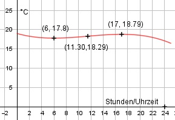

Aufgabe 78 Die Messung der Oberflächentemperatur O eines Bergsees im Verlaufe eines Tages ergab die Werte: Um 0.00 waren es 19°C, der niedrigste Wert in den ersten 12 Stunden von 17,8°C um 6.00 Uhr und der höchste um 17.00. a) Wie lautet die Funktionsgleichung 3. Grades, die diesen Sachverhalt beschreibt? b) Um wieviel Uhr stieg die Temperatur am stärksten? c) Wie groß ist die Änderungsrate um 22.00 Uhr? a) Allgemeine Form der gesuchten Funktion mit t für die Zeit bzw. Anzahl der Stunden. O(t) = at3 + bt2 + ct + d O'(t) = 3at2 + 2bt + c O''(t) = 6at + 2b O(0) = 19 = d O(6) = 17,8 = a * 63 + b * 62 + c * 6 + 19 17,8 = a * 216 + b * 36 + c * 6 + 19 |-19 216a + 36b + 6c = - 1,2 (1) O'(6) = 0 = 3a * 62 + 2b * 6 + c O'(6) = 108a + 12b + c = 0 (2) O'(17) = 0 = 3a * 172 + 2b * 17 + c 867a + 34b + c = 0 (3) (3) + 2 * (-1) 867a + 34b + c = 0 -108a - 12b - c = 0 -------------------- 759a + 22b = 0 (4) (1) + 2 * (-6) 216a + 36b + 6c = -1,2 -648a - 72b - 6c = 0 ---------------------- -432a - 36b = -1,2 (5) (4) * 36 + (5) * 22 27 324a + 792b = 0 -9 504a - 792b = -26,4 ----------------------- 17 820a = -26,4 |:15840 1 a = - ----- 675 a in (4) eingesetzt: 759 - ----- + 22b = 0 |*675 675 -759 + 14 850b = 0 |+759 14 850b = 759 | :14 850 759 253 23 b = --------- = -------- = ----- 14 850 4 950 450 a und b in (2) eingesetzt: 108 12 * 23 - ----- + ---------- + c = 0 |*1 350 675 450 - 216 + 828 + 1 350c = 0 |-612 1 350c = 612 | :1 350 612 68 34 c = - -------- = - ------ = - ---- 1 350 150 75 1 23 34 O(t) = - -----t3 + -----t2 - ----t + 19 675 450 75 b) Der Temperaturanstieg ist dort am stärksten, wo die erste Ableitung der Funktion ein Maximum hat. Dort ist die 2. Ableitung = 0. 3 46 34 O'(t) = - ----- t2 + ----- t - ---- 675 450 75 6 2 * 23 O''(t) = - -----t + --------- = 0 |*1 350 675 450 -12t + 138 = 0 |+12t 12t = 138 |:12 t = 11,5 h --> Uhrzeit 11.30 c) Änderungsrate -- 1. Ableitung 3 2 * 23 34 O'(22) = - ----- 222 + --------- 22 - ---- 675 450 75 O'(22) = -0,36 --> die Temperatur fällt um etwa 0,36°/h.
